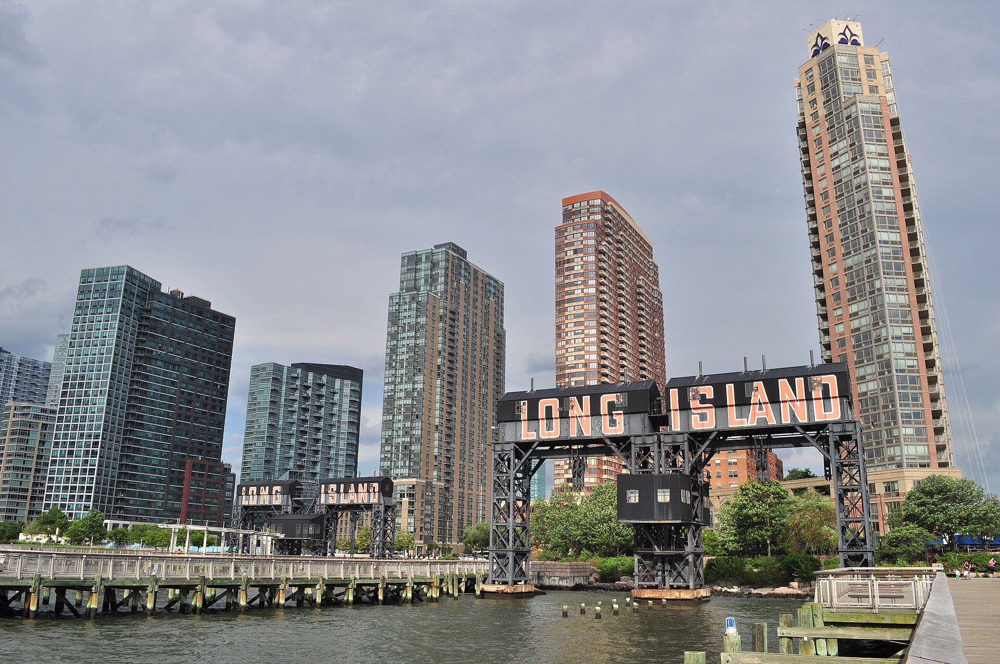

Queens · Neighborhood guide
Long Island City Neighborhood Guide
The Hunters Point waterfront, Court Square and the apartment choices between them—with practical checks for buyers and renters.
By Glenn Velasco
Licensed Real Estate Salesperson · Compass
Published

- Median sale price
- $950,290
- Median asking price
- $1,150,000
- Median asking rent
- $4,595/mo
StreetEasy Data Dashboard, September 2026.
Long Island City, often called LIC, gives you several ways to live close to Manhattan while making Queens home. The waterfront around Hunters Point, the streets near Court Square and older residential blocks offer different relationships to parks, trains and building services. Compare those settings in person before letting a skyline photograph decide your search.
01 / Boundaries
Hunters Point and Court Square are different starting points
This guide focuses on the Hunters Point waterfront and the Court Square area of Long Island City. Begin with Vernon Boulevard, Jackson Avenue and the East River, then map each prospective apartment against those landmarks. LIC is a broad label, and a building advertised under it may sit well away from the stretch of waterfront you have in mind.
In New York, the neighborhood is an extension of your home. A waterfront path can become your evening walk; a nearby station can change the time you spend getting across the city. Try both routes from the apartment. The best-looking view and the most useful location for your routine are separate features worth comparing.
Plan a viewing day with at least one waterfront address and one closer to Court Square, keeping the apartment size and budget similar. This makes the location tradeoff clearer than comparing a large apartment with a smaller one simply because both are in LIC.
02 / History
History and historic districts
LIC’s history remains visible beside its newer skyline. The Hunters Point Historic District, designated in 1968, includes residential rows along 45th Avenue between 21st and 23rd Streets. At Gantry Plaza State Park, preserved gantries recall the waterfront’s freight-handling past. These are distinct parts of the neighborhood’s story; the historic district does not cover every address marketed as Hunters Point.
03 / Housing
Look beyond the skyline: older homes and larger buildings
For an apartment in a larger building, compare the home itself before the amenity list. Check room dimensions, storage, daylight and the position of neighboring buildings. Then ask which amenities are included, which require separate payment and which are available at the hours you would use them.
In a condo purchase, request current common charges, property taxes and any assessments. If marketing mentions a tax benefit, have your attorney verify the terms and remaining duration for that property. If you are considering new development, compare what is completed and available now with what is described in the offering materials.
An older or smaller building calls for its own review of entry access, stairs, laundry and maintenance responsibilities. For waterfront properties, ask your professionals about building systems, past water issues and relevant insurance considerations. The address and building matter more than a general claim about the neighborhood.
What to check on a viewing
- Compare the waterfront and Court Square with similar apartment requirements.
- Separate apartment features from optional building amenities and their fees.
- Check the actual outlook and nearby construction from the unit’s floor.
- Time the complete trip, including the walk to the correct station entrance.
04 / Market snapshot
Long Island City real estate market, September 2026
- Median sale price
- $950,290
- September 2026
- Median asking price
- $1,150,000
- September 2026
- Median asking rent
- $4,595/mo
- September 2026
Source: StreetEasy Data Dashboard.
Sale prices describe completed transactions; asking prices and rents describe listings. They cover different homes, so the gap is not a measure of a typical discount. A neighborhood median is a reference point, not a valuation of an individual property.
For rentals, request the payment schedule for the full lease. If an apartment advertises a concession, compare the rent you actually pay each month, the total over the term and any separate amenity charges. A first-lease incentive does not establish the terms of a later renewal.
For buyers, group comparable homes by building type, size, condition and services. A high-floor condo with outdoor space is a different comparison from an apartment in a smaller building. Use recent comparable sales alongside current alternatives, then calculate recurring expenses separately from closing costs.
If you are planning the move from abroad, ask for a video tour that includes the entrance, common areas and route to transit. The Buyer’s Guide and Renter’s Guide explain the broader process; the neighborhood visit should help you decide which LIC location fits it.
05 / Subway lines
Choose the route before estimating the commute
The 7 serves Vernon Boulevard–Jackson Avenue, Hunters Point Avenue and Court Square. At Court Square, connections include the G and E, with F service listed in the current MTA schedule. Queensboro Plaza provides another 7 connection with N/W service. Consult the 7 map and G map for current service and entrances.
The riverfront and Court Square are not the same transit location. Time the walk from the building’s front door, the transfer if needed and the walk at your destination. Compare the trip at the hours you actually travel, including weekends. A short ride across the river does not describe the entire commute.
06 / Parks, libraries and landmarks
Waterfront parks, a library and MoMA PS1
Gantry Plaza State Park and Hunter’s Point South Park provide two waterfront destinations to include in your first walk. Follow the route back to a prospective home with groceries or another ordinary errand in mind, rather than evaluating it only as a weekend outing.
The Hunters Point Library and Environmental Education Center is at 47-40 Center Boulevard. Farther inland, MoMA PS1 is at 22-25 Jackson Avenue. Check their visitor information and programming when planning a neighborhood visit.
Pay attention to the block around the building as well as the destination at the end of the walk. Check deliveries, construction activity and the outlook from the actual apartment. An open view in a photograph is worth investigating against neighboring sites; it is not a promise that the surroundings will stay unchanged.
07 / Public schools
Public schools
School assignments and admissions depend on the exact address, grade and program. Before relying on a listing’s school information, confirm current zoning and enrollment details with NYC Public Schools’ school search. Zones can change.
08 / Buying or renting with Glenn
Buying or renting in Long Island City with Glenn
Share your budget, timing and the places you need to reach. Glenn can help compare specific homes and buildings in Long Island City, with support in English, Italian, Spanish and French. If you need an introduction to a lender or attorney, he can help with that too.

Planning a purchase? Start with the Buyer's Guide. Looking to rent? The Renter's Guide covers documents, income requirements and applications. Then contact Glenn at 929.392.3707 or glenn.velasco@compass.com.
Glenn Velasco
Luxury Property Specialist, Compass
- Phone
- 929.392.3707
- Office
- 110 Fifth Avenue, 7th Floor
New York, NY 10003
Buying guides are also available in italiano and español. You can also reach Glenn on WhatsApp.
Keep exploring: Greenpoint · Williamsburg · Midtown East.
09 / FAQ
Long Island City FAQ
Is Long Island City in Manhattan?
No. Long Island City is in Queens, across the East River from Manhattan. Choose the specific station and route that work for your destination.
Are Hunters Point and Court Square the same location?
They are distinct areas within an LIC search. Compare each address with the waterfront, station entrances and services you expect to use.
Does an LIC apartment’s advertised rent include the amenities?
Not necessarily. Ask for the lease payment schedule and a separate list of included and optional services before comparing the total cost.
10 / Sources
Sources
Sources checked November 4, 2026: NYC LPC: Hunters Point designation report; New York State Parks: Gantry Plaza; NYC Parks: Hunter’s Point South Park; Queens Public Library: Hunters Point; Queens Public Library: library renaming; MoMA PS1: visitor information; MTA: 7 line; MTA: G line; StreetEasy: September 2026 market data; NYC Public Schools: school search.
Archival neighborhood photograph: Gantry Plaza State Park Long Island City 01 (9431668991).jpg by Joe Mabel from Seattle, US, CC BY-SA 2.0, via Wikimedia Commons. Photo date: 2013. Displayed with responsive cropping; the photograph remains under its linked license.
.jpg){kind=link}